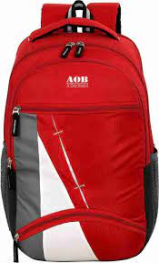
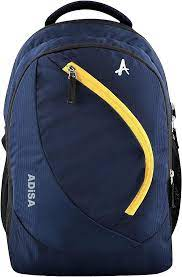

Price : $2999

Price : $1999

Price : $3999
Price : $2999
Price : $1999
Price : $3999
School bag is one of the most essential items for school kids. It is used as a medium to transport different materials like exercise books, pencil box, water bottle and a lunchbox to and from school. Apart from this, a school bag helps a child to keep his belongings safe from external damage like sun, dust or rain.
345678906789
bag@gmail.com
In a world where sustainability and style intertwine, bag companies have become pioneers of innovation. From redefining fashion trends to prioritizing eco-friendly materials, these companies are reshaping the industry landscape. Let's delve into the realm of bag companies, exploring their journey towards sustainability, commitment to quality, and the impact they have on both consumers and the planet.With environmental concerns at the forefront of global discussions, consumers are increasingly seeking products that align with their values. Bag companies have responded to this demand by incorporating sustainable practices into their operations. From utilizing recycled materials to minimizing carbon footprints, these companies are spearheading a movement towards eco-conscious consumerism.One of the hallmarks of modern bag companies is their use of sustainable materials. Traditional materials like leather, once synonymous with luxury, are being replaced with innovative alternatives such as recycled plastics, organic cotton, and vegan leather. Not only do these materials reduce environmental impact, but they also offer durability and style, challenging the notion that sustainability compromises quality.